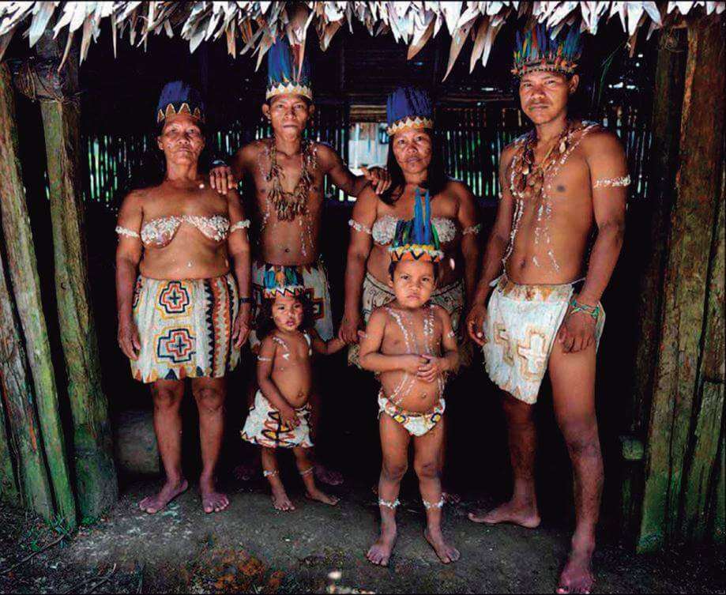

Cultura de Leticia
Tradiciones Indígenas
Comunidades Indígenas: Los tikunas, yaguas, huitotos y cocamas son las principales culturas que han preservado sus tradiciones ancestrales.

Rituales: El "Ritual de la Pelazón" celebra el paso de la niñez a la adultez entre los tikunas.

Aunque el español es el idioma oficial, lenguas como el tikuna, huitoto y yagua son habladas, representando el patrimonio cultural de la región.

Platos Tradicionales: Destacan el pirarucú, la yuca, el plátano y frutas exóticas como el copoazú y el açaí.


Danza y Música
Música Indígena: Incluye flautas y tambores, coexistiendo con géneros como la cumbia, salsa y forró.


La selva amazónica es sagrada para las comunidades indígenas, que mantienen un equilibrio con la naturaleza.
 Mitos y Leyendas: Estas historias transmiten la relación de los humanos con la selva y sus espíritus.
Mitos y Leyendas: Estas historias transmiten la relación de los humanos con la selva y sus espíritus.